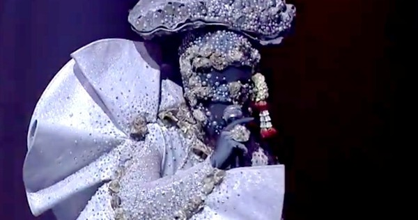

Until We Will Become Dust – Oyster Masked (181 mil. views)
Deze auditie bij een populaire zangtalentenjacht in Azië is Youtube's top trending video van 2017 met meer dan 181 miljoen views. De show, genaamd The Mask, veplicht deelnemers maskers te dragen om hun identiteit te verbergen.
